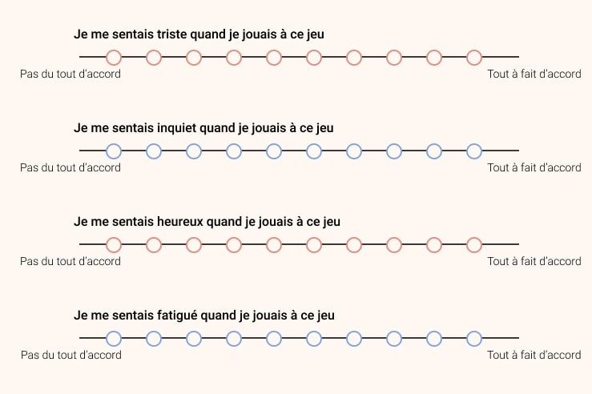
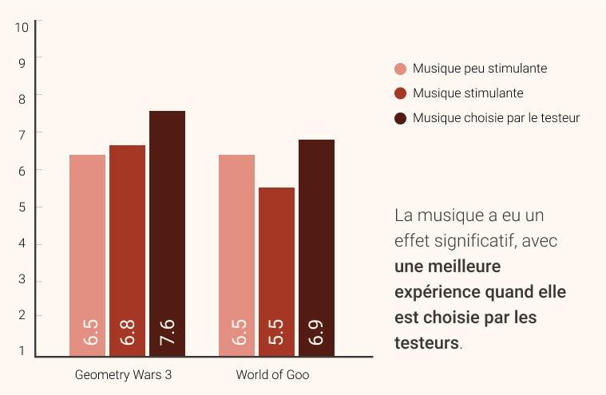

Ce projet a vu le jour grâce à l'opportunité de travailler sur mon mémoire de maîtrise avec Loïc Caroux, à l'Université Jean Jaurès de Toulouse.
L'un de ses nombreux sujets de recherche est le domaine des jeux vidéo. J'ai pu collaborer avec lui pour faire une étude sur le lien entre l'ergonomie d'interface et le jeu.
Mon objectif était alors de m'intéresser aux effets de la musique sur l'expérience utilisateur et la performance, dans le domaine du jeu vidéo.
Rôle : Réalisation de l'ensemble de la recherche utilisateur, supervisée par Loïc Caroux
Methodologie : Recherche littéraire, observation, questionnaire, analyse statistique
Outils : Excel
Durée : Environ 6 mois
A l'époque de la rédaction de mon mémoire, il n'y avait pas vraiment de consensus sur les effets et la perception de la musique dans la littérature scientifique. Parfois décrite comme une source de distraction, d'autres fois décrite comme un stimulus quelconque, les effets de la musique seraient alors très différents selon le contexte d'écoute et bien évidemment le matériel présenté. Cette différence serait encore plus marquée dans le domaine des jeux vidéo, bien que la grande majorité des études à ce sujet se concentrent uniquement sur les jeux de conduite.
J'ai voulu trouver de nouvelles informations et surtout sur d'autres types de jeux que la conduite,
principalement parce que j'avais l'impression que ce genre était sur-représenté,
et également pour le plaisir d'étudier de nouvelles choses !
J'ai donc testé différents types de musique pour également faire varier le niveau de "stimulation".
Cette variable telle que définie en psychologie cognitive couvre plusieurs aspects liés aux
stimuli extérieurs et notamment musicaux. Cela englobe par exemple la complexité sonaire ou le caracrtère répétitif d'une musique, la familiarité avec le matériel présenté,
le rythme, etc. Une musique que l'on qualifierait comme ayant un "haut niveau de stimulation" serait généralement
définie comme nécessitant plus de ressources cognitives pour être traitée, qu'une musique ayant un
"faible niveau de stimulation".
Plus précisément, mes questions de recherche étaient les suivantes :
• Que se passe-t-il lorsque vous jouez à un jeu vidéo tout en
écoutant un morceau de musique que vous avez choisi vous-même par rapport à un morceau choisi par un expérimentateur ? Est-ce que cela affecte votre performance ? Et votre expérience utilisateur ?
• Y a-t-il une différence entre écouter de la musique
à "haut niveau de stimulation" ou à "faible niveau de stimulation" lorsqu'on joue à un jeu vidéo ?
• Ces observations changent-ils selon le type de jeu ?
Y a-t-il un effet de "couplage", c'est-à-dire que la musique à "haut niveau de stimulation"
et un jeu dynamique provoqueraient ensemble une meilleure expérience utilisateur ?
Les chansons que j'ai utilisé étaient Distractions de Zero 7 et Attitude de Sepultura, principalement pour rester consistant avec plusieurs anciennes études faites sur le sujet et utilisant le même matériel.
Les jeux que j'ai utilisé étaient World of Goo et Geometry Wars 3. La raison était simple : Geometry Wars 3 possède un système que l'on qualifie de dynamique, où l'environnement change constamment, que l'on appuie sur un bouton ou non, alors que World of Goo a un environnement statique, qui ne change que lorsque l'on appuie sur une touche, plus apte à la réflexion.
Pour recruter des participants, je suis parti faire du guerilla et j'ai simplement demandé aux étudiants présent sur le campus de venir jouer avec moi !
Avec du recul, c'était la première fois que je tentais d'utiliser du guérilla pour faire du recrutement. Faire le tour de l'université et convaincre des personnes était assez difficile, mais j'ai pu rapidement trouvé 20 participants en quelques heures. Par contre, un biais qui en découle est que je n'ai recruté que des étudiants, ce qui a pu avoir un impact sur les données. C'est une des choses que je changerais si j'avais à recruter des participants pour une autre étude.
Le protocole de test était simple : Les utilisateurs se sont vus attribuer (au hasard) un ordre de passage, ordre dans lequel ils ont joué aux deux jeux et avec toutes les situations musicales. Après chaque session, leur performance était enregistrée (leur score dans Geometry Wars 3, et leur temps de résolution pour terminer un puzzle dans World of Goo), puis ils remplissaient un court questionnaire d'expérience. J'ai analysé l'ensemble des données à l'aide d'Excel.
Les résultats étaient "intéressants", ce qui veut dire que nous n'avons pas exactement trouvé ce à quoi nous nous attendions :

• Les performances des joueurs n'ont pas été affectées,
la musique ne semble donc pas avoir d'effet sur cette variable.
• Mais ! Il y avait une meilleure expérience utilisateur
(d'après le questionnaire) lorsque la musique était choisie par le participant lui-même,
comparé à la musique choisie par l'expérimentateur.
• De plus, il y a eu une concordance entre les niveaux de stimulation de la musique et des jeux.
En fin de compte, ce que j'ai retenu de ce mémoire, outre le fait qu'il était nécessaire sur le plan académique, c'est qu'il existe encore de nombreux aspects peu étudiés par les universitaires sur les jeux vidéo et leurs effets sur l'expérience utilisateur. Le jeu vidéo est certainement l'une de mes plus grandes passions, et j'ai vraiment apprécié de commencer mon parcours d'UX sur un tel projet !
Cela m'a également valu une publication puisque mon travail a ensuite été sélectionné puis présenté au congrès de l'Association internationale d'ergonomie IEA 2018 qui s'est tenu à Florence, vous pouvez le lire ici.
Merci de la lecture !
Que diriez-vous d'un retour sur mon expérience chez Testapic ? 🔬